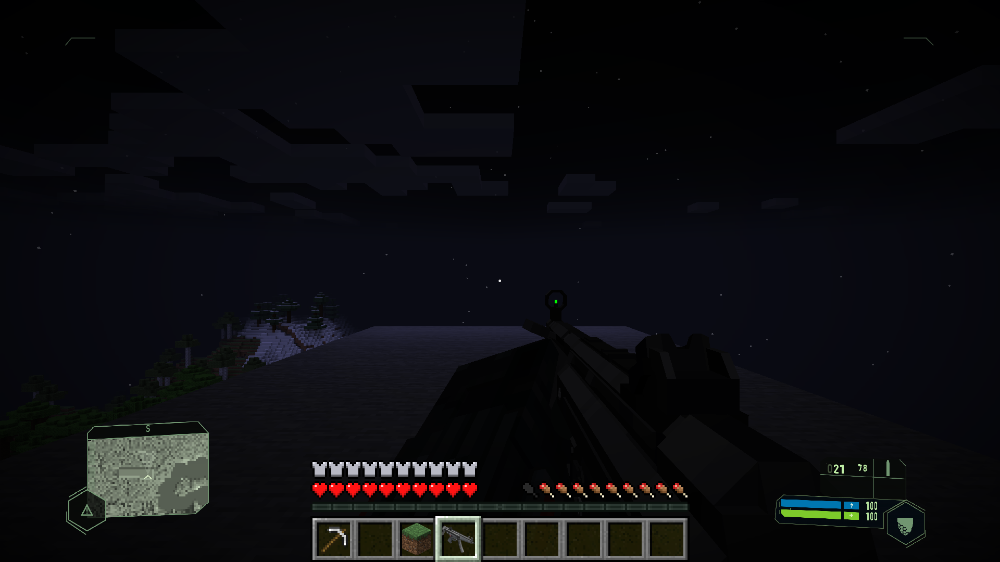
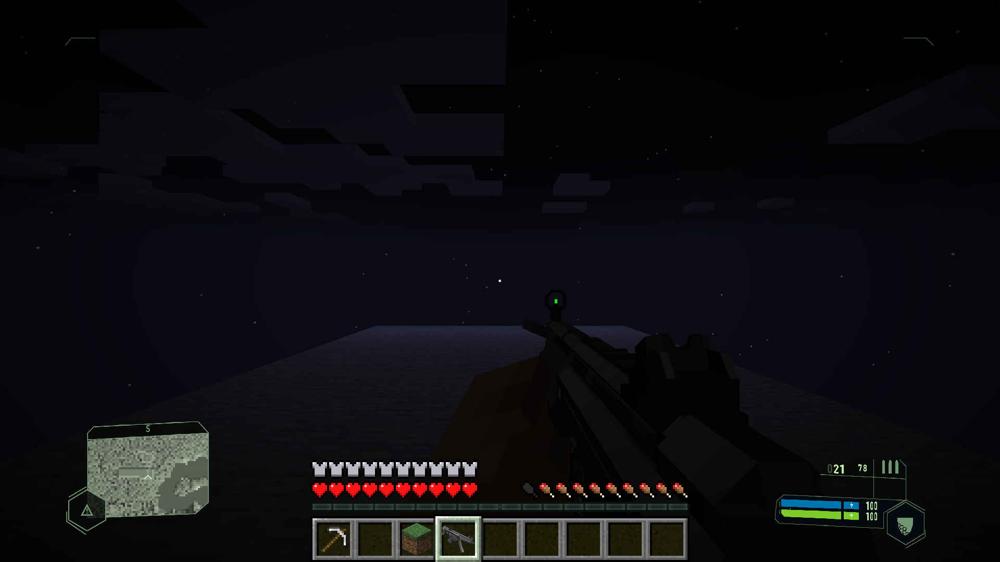
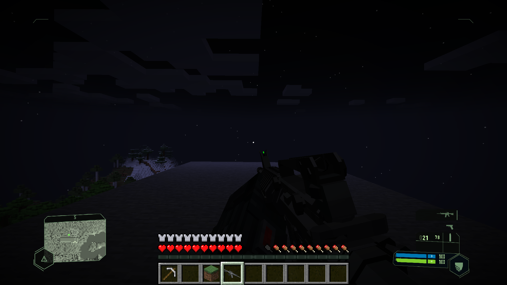
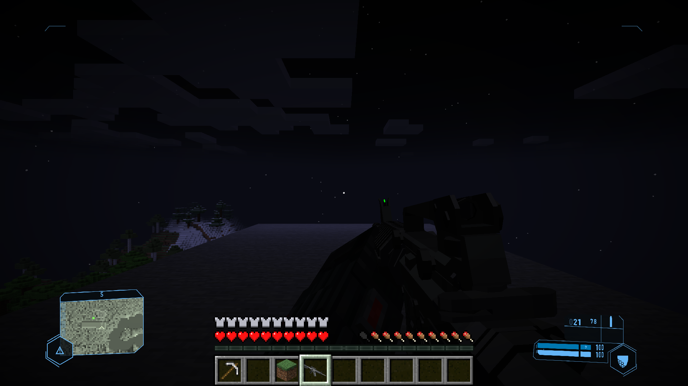
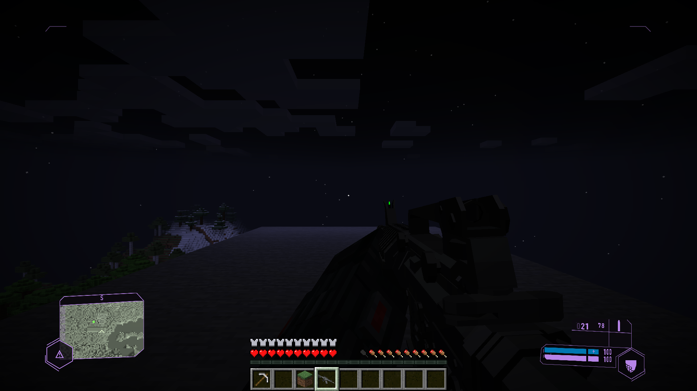
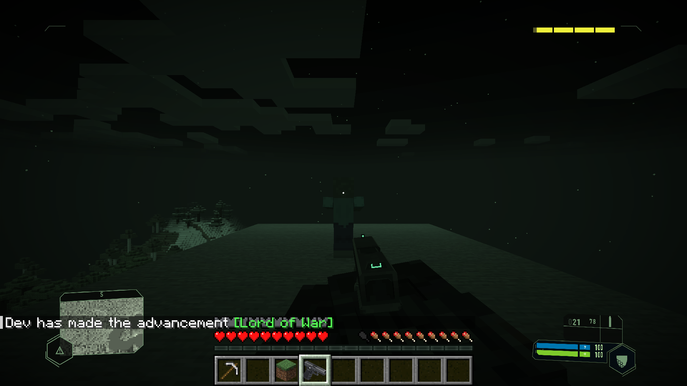
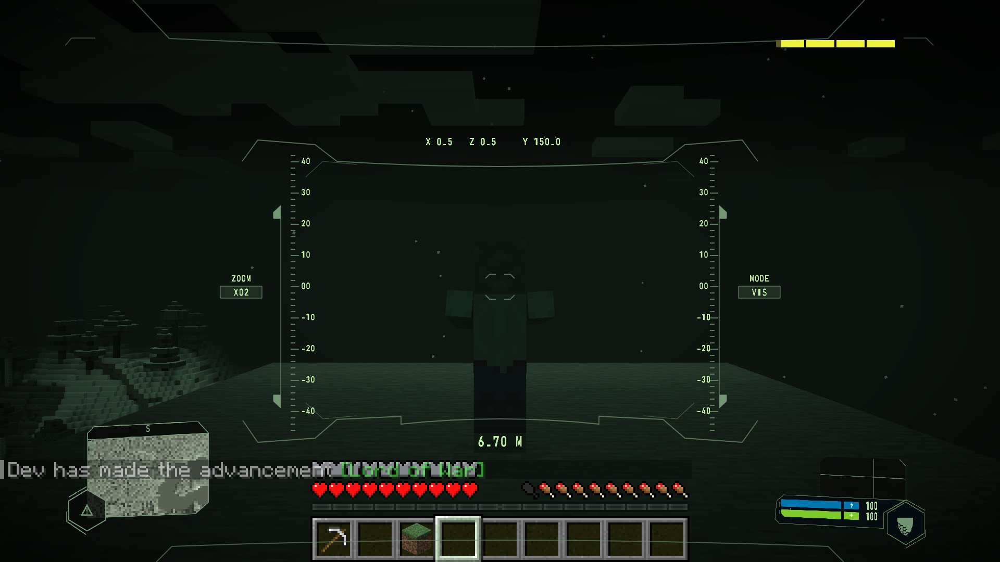
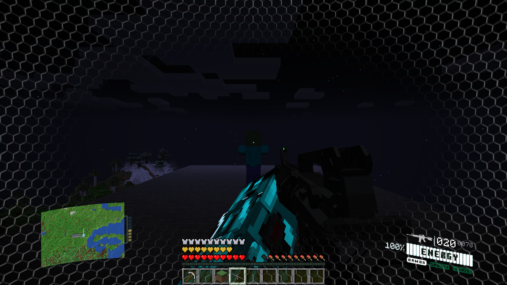

RTX 3070, Minecraft NeoForge 1.21.1. Objets et cibles préparés dans une copie du monde de test. Cliquer pour ouvrir la capture complète. Certaines vues conservent le chat vanilla de la fixture.
La ligne inférieure des munitions est réservée aux objets à lancer ; aucune grenade ou quantité n’a été inventée. Le pictogramme BURST reste à comparer précisément au Remastered.







